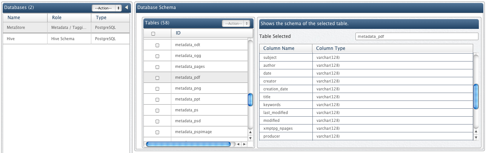

QueryIO provides a feature to associate tagging with files. QueryIO allows you to configure a database instance for use with each Namespace. The tags associated to each file are stored in this databases. This enables you to search for specific files as per the tags they've been associated with. You can execute standard SQL queries on the database specifying the filters and retrieve a list of the files that pertain to your need at the moment. QueryIO can stores two types of tags for a file:
Metadata (metacontent) is defined as data providing information about one or more aspects of the data. Every type of file has some associated properties with it that can help to make it searchable. These properties includes such things as the name of the author or the date that the file was last modified. These could be file specific, such as aspect ratio or dimensions of an image file.
The namespace of the entire filesystem, including the mapping of blocks to files and file system properties, is stored in HDFS. Core Metadata refers to these properties that are stored in HDFS. When you upload any files to QueryIO, it automatically extracts this HDFS metadata for those files from HDFS. The extracted metadata is then stored in the associated table in the database. Using the extracted metadata you can also reconstruct the file system namespace so that you do not loose access to your data even if your Namenode crashes.
Database schema for storing hdfs metadata is as follows:
| Parameter | Description | Data Type | Column Name |
|---|---|---|---|
File path |
Absolute path of the file on the cluster |
String | FILEPATH |
Access time |
The time when the file was last accessed |
Timestamp | ACCESSTIME |
Modification time |
The time when the file was last modified |
Timestamp | MODIFICATIONTIME |
Owner |
Name of the file owner |
String | OWNER |
User group |
User group to which the file belongs |
String | USERGROUP |
Permission |
Permissions of the file |
String | PERMISSION |
Block size |
Size of the blocks of the file |
Integer | BLOCKSIZE |
Replication |
Replication count for the file |
Integer | REPLICATION |
Length |
Length of the file in bytes |
Integer | LEN |
Compression Type |
Compression algorithm used for the file. Supported algorithms are SNAPPY, GZ, LZ4. |
String | COMPRESSION_TYPE |
Encryption Type |
Encryption algorithm used for the file. Supported algorithms are AES256 |
String | ENCRYPTION_TYPE |
Extended metadata feature of QueryIO enables users to associate files in HDFS with metadata that is not interpreted by the file system, whereas hdfs metadata has a purpose strictly defined by HDFS(such as permissions or records of creation and modification times). Typical usage can be storing the author of a document, the character encoding of a plain-text document, a checksum, or digital signature.
To support Extended Metadata for standard files, QueryIO uses Apache Tika™ to parse and extract metadata from various files.
Some of the supported document formats are enumerated below:
When you upload any file to HDFS using QueryIO, it automatically parses the file and stores the extracted metadata in the associated table (specific to file type) in the database.
For instance, if you upload a PDF file to QueryIO, information like author, subject, number of pages, etc will be extracted from that file. All of this extracted information will be saved in the respective columns in the METADATA_PDF table in the database. You can view the schema for such a schema from "Manage Datasource" view. Following is an example showing some of the columns / fields for METADATA_PDF table.

You can also register your own metadata parser to support other file formats.
If you do not want QueryIO to extract the metadata from the files during ingestion, you can disable the registered parser from the "Manage DataSources" view.
As you probably know, every file on your system has a set of attributes called file properties that includes such things as the name of the author or the date that the file was last modified. Tags are another type of file property, designed to be customized by the user. Tags are great for making searching easier because you can use words or even phrases that make sense to you. You can think of Tags as keywords.
While tagging is a great feature, Hadoop, which QueryIO is based on does not allow you to tag your files. This leaves you in the dark as you have no way of filtering your files except going through the entire list of files and manually looking for the files you need.
To combat this, QueryIO uses a fusion of contemporary relational databases and Hadoop. The tags for all the files stored in HDFS are stored in the database.
This enables you to tag your files and it makes searching for specific files even easier.
You just need to execute standard SQL queries on the database specifying the filters and you can retreive a list of the files that pertain to your need at the moment.
Lets say you have multiple spreadsheets containing prices for individual stocks respectively.
The columns in the file would probably be: DATE, OPEN, HIGH, LOW, CLOSE, VOLUME.
Now, lets say, you want to find those stocks for which the volume on any particular day crossed 100K.
Here are the approaches that you can follow:
1) One approach would be to scan through all those files manually to check for this information. Now that would be very tiresome approach to follow.
2) Alternatively, you can upload those files to HDFS and choose to write a map-reduce job to process all those files and extract the information you need.
Both the above approaches would be extremely cumbersome and costly.
Intelligent data tagging feature of QueryIO keeps all your problems at bay and lets you focus on other important tasks while it takes care of processing all those files to extract all the information you need.
QueryIO has a lot of intelligent content processors which can analyze the content of your files to extract specific information.
You can specify the conditional expressions to tag only those files that meet your condition.
You can also specify arithmetic and logical operations to evaluate on the content of your files. The result of these operations will be saved as a tag to those files which meet the condition that you had specified.
On Ingest Tagging
The on ingest tagging feature enables QueryIO to process and tag your files while they are still on the way to HDFS. This saves you from the trouble of having to write and execute map-reduce jobs which is pretty much labour intensive.
Post Ingest Tagging
The post ingest tagging feature executes a typical map-reduce job to explicitly assign tags to the files that already exist on your cluster.
It can be helpful in following scenarios:
1) At any point of time if you choose to alter the tags that you had previously assigned to your files.
2) You did not apply any tags to your files earlier but want to do it now.
To add a data tag, navigate to Data > Data Tagging view.
To add a data tag, navigate to Data > Data Tagging view.
Following example guides you to add a data tag on a hive table : hivecsvtable1 which finds average reading of CPU in a particular file for host 192.168.0.4
You can use Data Import to import data to the cluster and check the tags added in metadata table using Query Designer